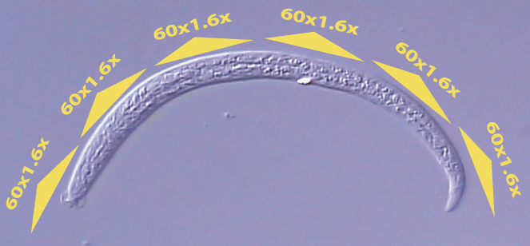

Second-stage juvenile of Ereptonema arcticum
Virtual specimen prepared by Melissa Yoder, Luis Mundo, Irma
T. De Ley and Paul De Ley
Click here for the scale bars
Click on the appropriate triangle in the image below to open the relevant
clip.

Copyright 2002